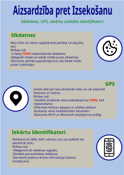

Datu aizsardzība ir process, kas atbalsta personas privāto datu drošību un ierobežo šo datu vākšanu un tālāku izplatīšanu personai nelabvēlīgu mērķu īstenošanai.
Bažas par privātumu pastāv visur, kur tiek vākta un glabāta personiski identificējama vai kā citādi sensitīva informācija. Šādas bažas var radīt dažādi informācijas avoti, piemēram:
Datu privātuma galvenais izaicinājums ir personiski identificējamas informācijas aizsardzība daloties ar datiem. Datu un informācijas drošības jomā izstrādā un lieto programmatūru, aparatūru un cilvēkresursus, lai risinātu šo jautājumu. Līdz ar datu aizsardzības likumu pastāvīgām izmaiņām, ir svarīgi nepārtraukti sekot šīm izmaiņām, lai nodrošinātu atbilstību datu privātuma un drošības nolikumiem.
Internetā par lietotāju bieži tiek nodota plaša privātā informācija. E-pasta servera administratori var lasīt e-pastus, kuri sūtīti nešifrētā savienojumā, tāpat arī interneta pakalpojumu sniedzēji spēj iegūt datu plūsmas saturu, kas attiecas arī uz datu plūsmu, kas radīta pārlūkojot internetu un veicot ziņojumapmaiņu.
Personiskās informācijas aizsardzībai iespējams šifrēt e-pastus un tīmekļa vietņu pārlūkošanu, kā arī citas tiešsaistes aktivitātes, izmantojot anonimizācijas tehnoloģijas, kas ierobežo vai pilnībā likvidē pārlūkošanas izsekošanu. Populārākie anonimizācijas risinājumi ietver izplatītus jaukšanas tīklus, piemēram, I2P un tor.
Sīkdatnes ir nelielas teksta datnes, kas tiek nosūtītas uz Jūsu datora atmiņu mājas lapas apmeklēšanas laikā. Katrā turpmākajā apmeklējuma reizē sīkdatnes tiek nosūtītas atpakaļ uz izcelsmes mājas lapu vai uz citu mājas lapu, kas atpazīst šo sīkdatni. Sīkdatnes darbojas kā konkrētas mājas lapas lokāli glabāta atmiņa, ļaujot šai lapai atcerēties Jūsu datoru nākamajās apmeklējuma reizēs, tai skaitā var atcerēties Jūsu iestādījumus vai uzlabot lietotāja ērtības.
